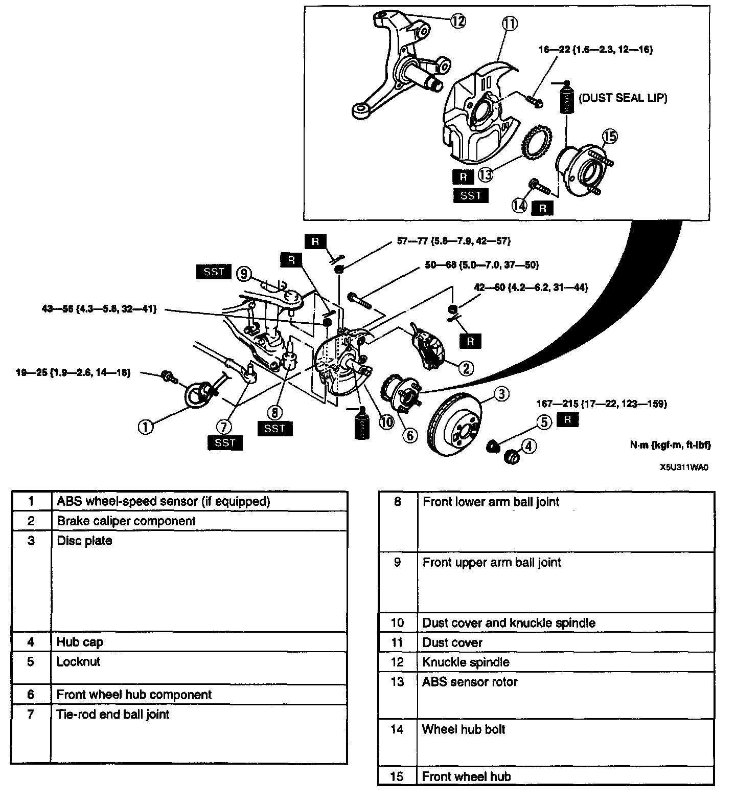
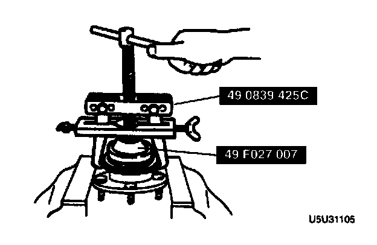
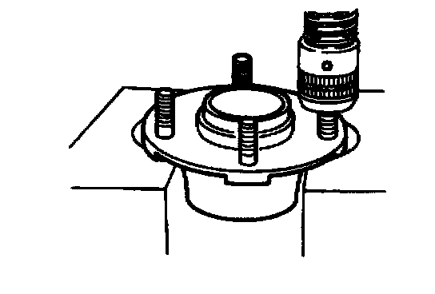
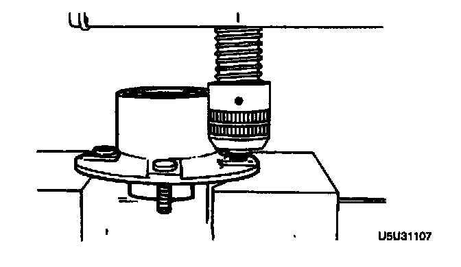
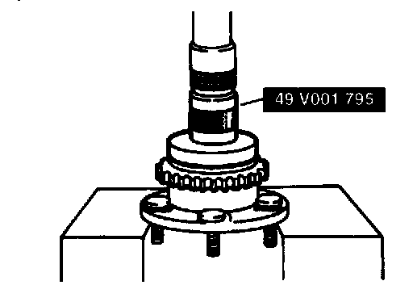
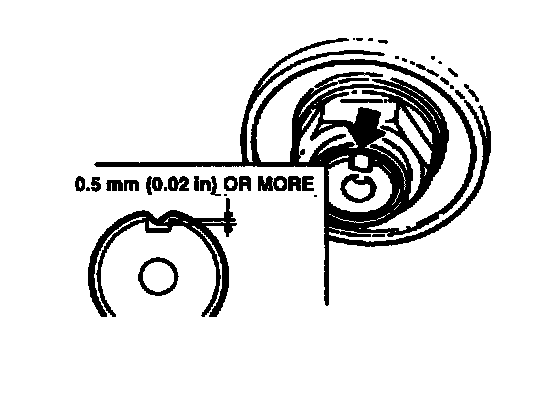

Front
WHEEL HUB, STEERING KNUCKLE REMOVAL/INSTALLATION
Caution:
- Performing the following procedures without first removing the ABS wheel-speed sensor may possibly cause an open circuit in the harness if it is pulled by mistake. Before performing the following procedures, remove the ABS wheel-speed sensor (axle side) and fix it to an appropriate place where the sensor will not be pulled by mistake while servicing the vehicle.
1. Remove in the order indicated in the table.
2. Install in the reverse order of removal.
3. After installation, adjust the total toe-in.
ABS Sensor Rotor Removal Note
- Secure the front wheel hub in a vise and remove the sensor rotor by using the SSTs.

Note:
- The sensor rotor does not need to be removed unless replacing it.
Wheel Hub Bolt Removal Note
Note:
- The hub bolts do not need to be removed unless replacing them.

- Remove the hub bolts by using a press.
Wheel Hub Bolt Installation Note

- Install the new hub bolts by using a press.
ABS Sensor Rotor Installation Note

- Install a new sensor rotor by using the SST and a press.
Locknut Installation Note

- Install a new locknut and stake it.